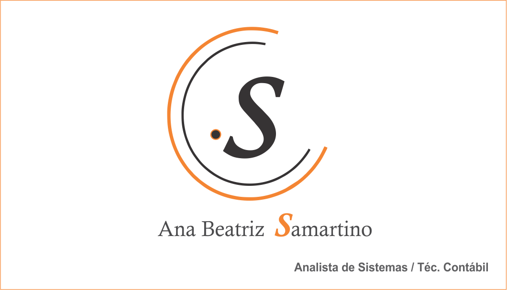
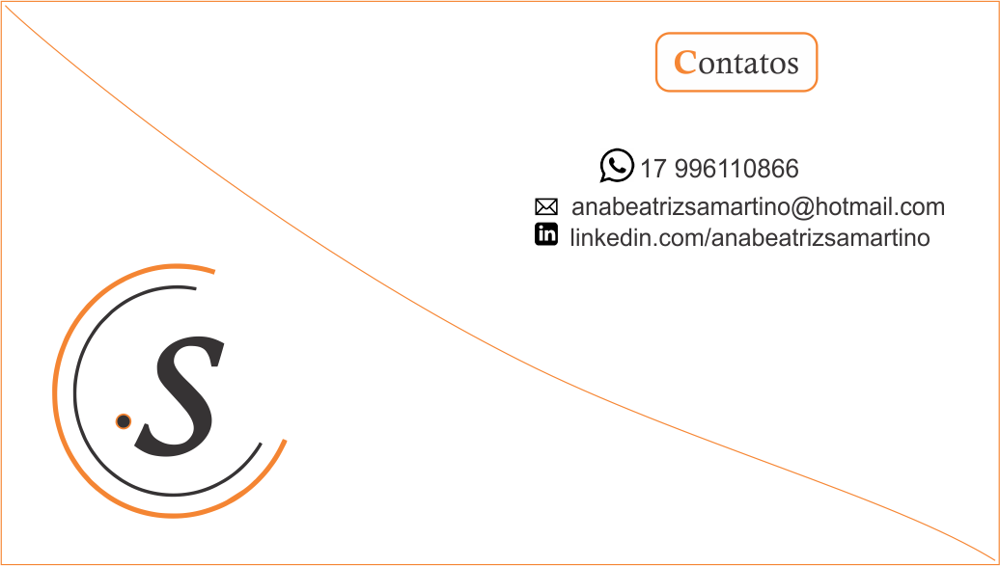

Bem vindo ao blog da Ana Beatriz Samartino!
Aqui você conhecerá a Fatec Jales, o Curso Sistemas para Internet aos meus olhos.
Sentirá a essencia de nossos mestres, da estrutura Fatec, além de se encantar por tudo isso!
Vamos nessa?
Navegue pelo menu!
Fatec Jales Profº José Camargo
A Fatec Jales, foi criada pelo Decreto nº 52.122, de 3 de setembro de 2007, publicado no DOE de 4 de setembro de 2007, iniciou suas atividades em 10 de setembro de 2007, instalada em espaço concedido à Secretaria da Ciência, Tecnologia e Desenvolvimento Econômico pela Secretaria da Educação, de acordo com Decreto 51.068 de 24 de agosto de 2006.
Instalações


Cursos Oferecidos


Você sabia?

Os cursos oferecidos pela Fatec são:
Superiores
100% gratuitos
Reconhecidos pelo Mec
Olá meu nome Ana Beatriz, 19 anos e residente de Fernandópolis.
Técnica Contabil formada pela Etec Fernandópolis e atualmente universitária em Sistemas
para Internet na Fatec Jales.
Portifório
Cartão de Visita


Clique aqui!
Artigo
Redes Sociais no âmbito empresarial
Portifório
Cartão de Visita
Artigo
Redes Sociais no âmbito empresarial
As redes sociais atualmente passam de meios de entretenimento e comunicação pessoal, alcança credibilidade
no âmbito empresarial substancialmente, aproximando cliente e organização, convertendo ideologias que vão além de divulgação,
marketing e propagandas, influenciando modificação no mercado, evoluindo estrategicamente.
Em uma pesquisa feita com alguns colegas através de um simples formulário do google,
pude avaliar que aproximadamente 95% das pessoas pesquisam e seguem empresas nas redes sociais.
E você? Na sua perspectiva ter redes sociais âmbito empresarial é viável? Com a ferramenta de enquete do aplicativo “Instagram”,
interagi com meus seguidores sobre o assunto, cerca de 110 pessoas participaram espontaneamente do breve “quiz”
e 100% das mesmas anuem que como cliente consideram que negócios e redes sociais formam um elo par.
Ao bater um papo com os empresários Leonardo e Fernando da PyxSoftware (empresa de desenvolvimento de software e gestão de mídias sociais,
localizada em Fernandópolis), extrai que as empresas estão atentas a essa evolução de mercado,
e a cada dia estão à procura de estratégias, além de estarem se adequando e evoluindo quanto ao assunto, e enxergam grandes benefícios.
Porém tratando se de negócios, é necessário precaução, analises para realizar o manuseio corretos das ferramentas sociais.
Se utilizadas corretamente e constantemente planejada causam referencias positivas, credibilidade tecnologia e identidade social,
ressaltando que tais ações e informações influenciam até mesmo nas tomadas de decisões de uma gestão.
Diante disso, planejamento correto é benéfico, abrindo caminhos que vão desde comunicação, divulgação, identidade empresarial na web,
até mesmo alcance publicitários com custo baixo. Estar atento as mudanças e interação cliente e empresa e primordial.
Estrutura de programinhas C
Laços de Repetição


Disciplinas
Algoritmos e Lógica de Programação
Conceitos básicos sobre algoritmos e métodos para sua
construção, desenvolvendo habilidades
para a criar soluções
de problemas e desenvolver programas.
Inglês I
Introdução à compreensão e produção oral e escrita por meio
da integração das habilidades
Além de desenvolver as
quatro habilidades, reading, listening, writing e speaking.
Bases da Internet
Introdução a Internet, fornecendo conceitos, história.
Principios sobre segurança que viabilizam a web,
fornecendo conhecimentos sobre golpes e ataques.
Criação de Conteúdo na Web
Adequação comunicativa em diferentes situações de interação
e plataformas como blogs, redes sociais, e sites.
Apresentação de planejamento de produção de conteúdo
textual, escrita e edição de conteúdo para Web.
Design Digital
Com auxilio das ferramentas Corel Draw e Adobe Photoshop, é realizado otimização de imagens para padrões Web de composição, além de criar marcas, cartões de visitas e logos.
Padrões de Projeto de Sítios Internet I
Padrões de projeto para Web.Elementos básicos dos conceitos de Web Design. Enfase em HTML e CSS. Conceitos de web semantica e padrões.
Leitura e Produção de Textos
A comunicação na atualidade, aplicado através de conceitos e estrategias, com intuito de aprimorar e utilizar tais hailidades em ambientes profissionais.
Fundamentos de Matemática Elementar
Conjuntos Numéricos. Regras de Três. Frações. Porcentagem. Potenciação e Notação Científica. Radiciação. Logaritmos. Polinômios. Fatoração e Produtos Notáveis. Matrizes. Equações e inequações do 1º e 2º graus.